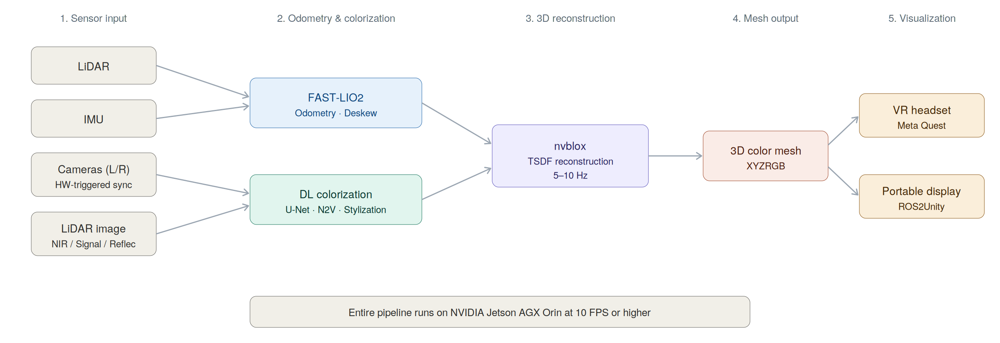
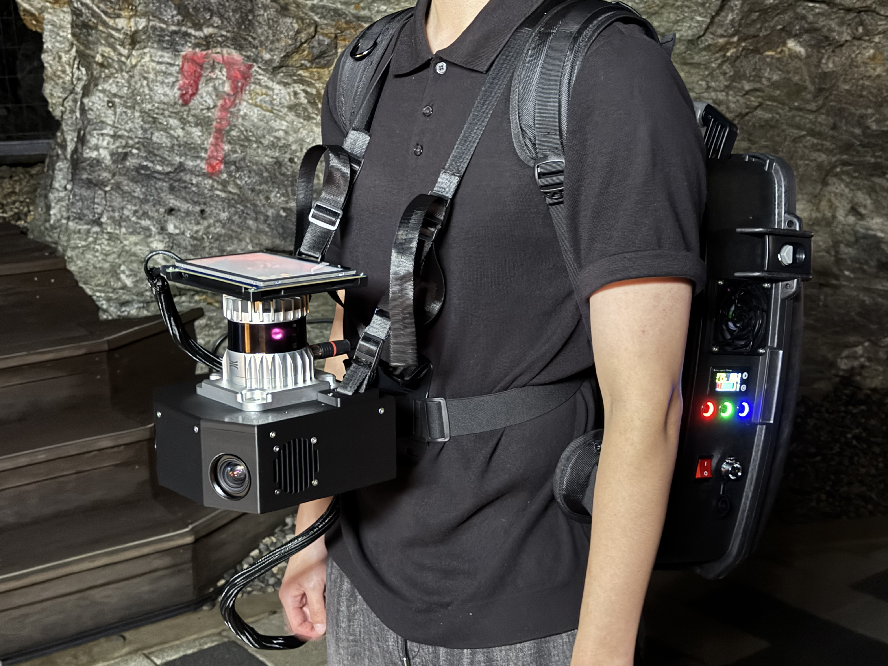
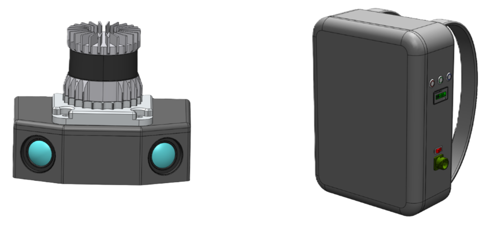
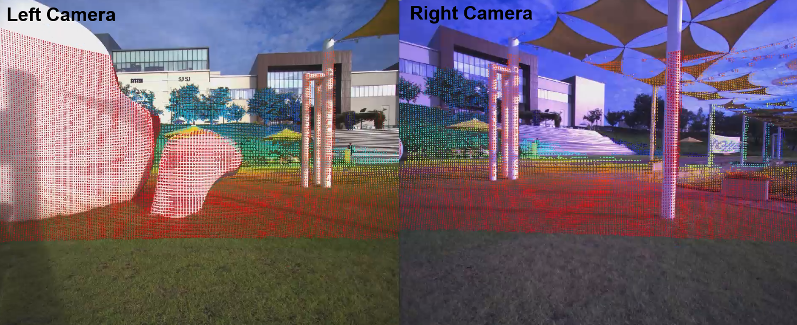
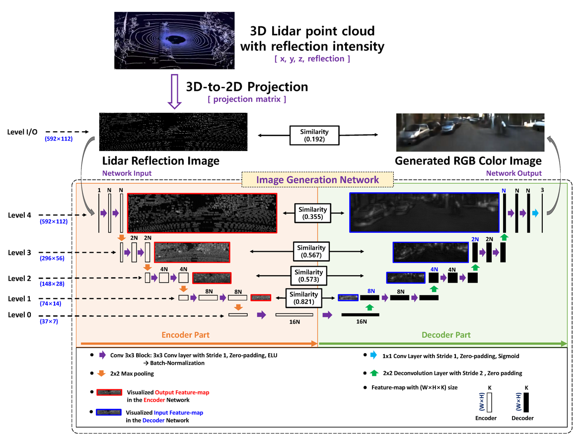
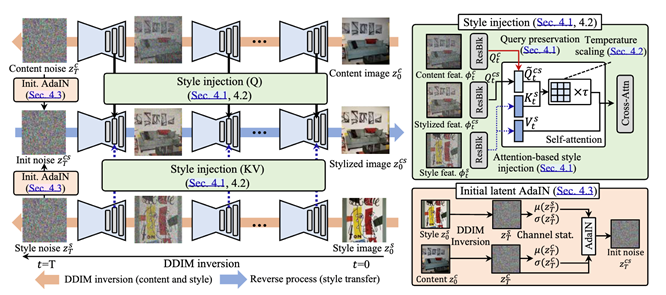
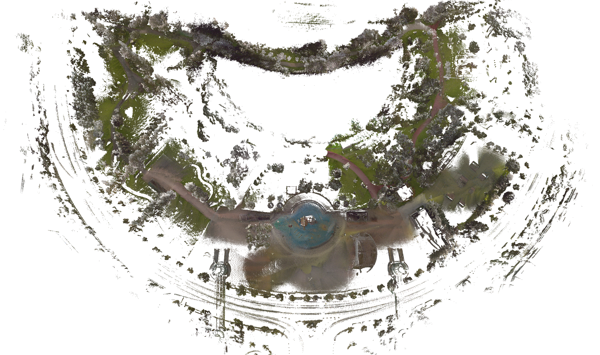

딥러닝을 활용한 LiDAR 기반 3D 지형 생성 및 시각화 연구
Deep Learning-based 3D Terrain Generation & VR Visualization
LiDAR3D TerrainDeep LearningColorizationNoise2VoidEmbeddedVR
Overview
본 연구는 달 표면 및 용암동굴과 유사한 극한 환경에서 LiDAR 기반 3D 지형을 실시간으로 생성, 시각화하는 통합 파이프라인을 구축하는 것을 목적으로 한다. 이를 위해 백팩형 다중센서 시스템을 제작하고, 카메라 없이도 딥러닝 기반 컬러라이제이션으로 LiDAR 데이터의 시각 품질을 향상시켜 미래 달 탐사 및 극한환경 로봇 주행 기술에 활용하고자 하였다.
백팩형 LiDAR–카메라–IMU 센서팩으로 FAST-LIO2 Odometry와 nvblox 실시간 Mesh를 생성하고, Noise2Void로 라이다 노이즈를 제거, 컬러라이즈하여 Jetson 임베디드 환경에서 실시간 3D 지형을 복원한다.



Scope참여 연구 항목
- Camera – LiDAR 캘리브레이션 데이터 취득 및 수행
- LiDAR 기반 3D 지형 데이터 취득 및 처리 알고리즘 구축
- 임베디드 실시간 추론 최적화
My Role
01학습 데이터 구축을 위한 센서 캘리브레이션
- 학습용 GT 데이터 확보를 위해 정밀 동기화된 Camera–LiDAR 센서팩 형태를 선택
- 백팩형 LiDAR–Camera–IMU 센서팩으로 광명동굴/야외 데이터 취득
- FAST-LIO2 기반 LiDAR–IMU SLAM 기반 Camera Colorized Mapping 파이프라인 구축

02U-Net 기반 라이다 컬러라이제이션
- 단일 반사강도만으로는 색 표현이 부족하므로, U-Net 멀티스케일 Encoder–Decoder와 skip-connection 구조로 NIR/Signal/Reflectivity 다중 모달을 입력받아 RGB로 복원
- 카메라–LiDAR 화각/시점 차이로 색 정합이 틀어지는 문제를 해결하기 위해 Domain Generalization 적용 → Overlap Region 기준으로 GT를 재구성해 다양한 촬영 조건에서도 강인한 복원 성능 확보
- 구조 보존, 엣지 강화, 밝기 균형을 동시에 달성하기 위해 L1/SSIM/Edge/Brightness를 결합한 복합 손실 함수 설계

03카메라 없는 라이다 컬러 복원
- U-Net 방식은 카메라 RGB를 GT로 필요로 하지만, 달 표면, 동굴 등 카메라 부재 환경에서는 RGB GT를 얻을 수 없어 지도학습이 불가능 → GT 없이 동작하는 Noise2Void 비지도 노이즈 제거와 Style Injection in Diffusion(학습 불필요 Stylization)을 적용
- Ouster 라이다 반사강도 이미지는 재질, 거리, 빔 간섭으로 강한 노이즈가 있어, 주변과 독립적인 픽셀을 노이즈로 보고 구조를 보존하며 제거하는 Noise2Void로 선명한 이미지 복원
- 원본 콘텐츠가 손상되면 3D 복원 품질이 떨어지므로, 구조를 변형하는 Colorization 대신 구조, 경계를 보존하는 Stylization을 채택해 색 표현만 추가

